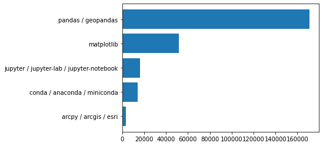

import pandas as pd
from matplotlib import pyplot as plt
so_tags = pd.read_csv("stackoverflowtags.csv")
so_tags = so_tags.sort_values("n_questions", ascending = False)
so_tags
| tag | n_questions | |
|---|---|---|
| 1 | pandas / geopandas | 171247 |
| 3 | matplotlib | 52022 |
| 2 | jupyter / jupyter-lab / jupyter-notebook | 16474 |
| 4 | conda / anaconda / miniconda | 13954 |
| 0 | arcpy / arcgis / esri | 3246 |
plt.barh(so_tags["tag"], so_tags["n_questions"])
plt.gca().invert_yaxis()
plt.savefig('so_tags.jpg',bbox_inches="tight", pad_inches = 1)
